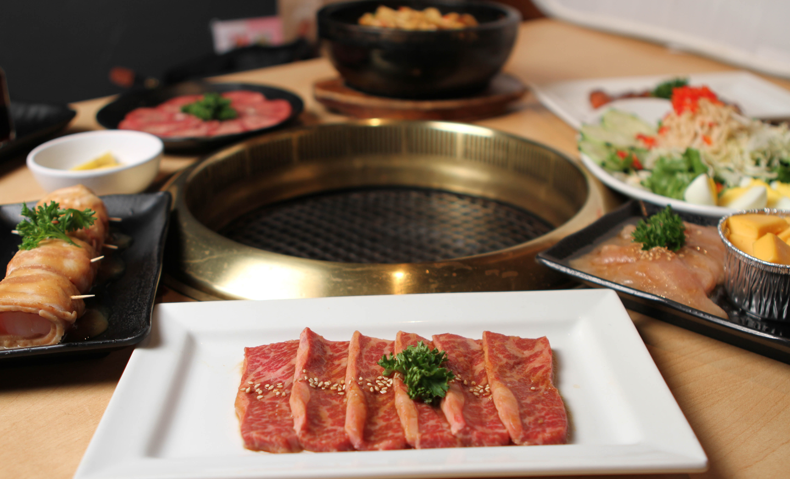
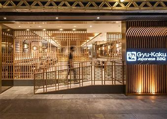

Gyu-Kaku
Horn of the Bull
Gyu-Kaku, meaning "Horn of the Bull" in Japanese, provides authentic Japanese yakiniku (grilled barbecue) dining experience where customers share premium cooked meats over a flaming smokeless grill, while sipping on Japanese sake, shochu, and frosty cold beers. Gyu-Kaku offers a wide range of meats including the best-seller Harami Skirt Steak in Miso Marinade and Prime Kalbi Short Rib in Tare Sweet Soy Marinade.
There are over 800 Gyu-Kaku restaurants worldwide, and the first U.S. location opened in West Los Angeles in 2001. Our Award Winning Restaurant was awarded the Hot Concept Award in 2007 and the demand keeps growing! Our fun and exciting experience allows for everyone to enjoy barbecuing at their table. The best part? Our Smokeless Roaster. With our down draft system, the smoke is sucked into the bottom of the table and away from guests! We want our food dining experience to inspire laughter, conversation, and amazing times! You can't help it - with a personal grill installed at every table, everyone instantly becomes an expert cook. Our friendly staff aspires to lead guests through the dining experience with helpful suggestions. The sounds around you are of parties and laughter - the PERFECT choice for first dates, families, and catching up with friends